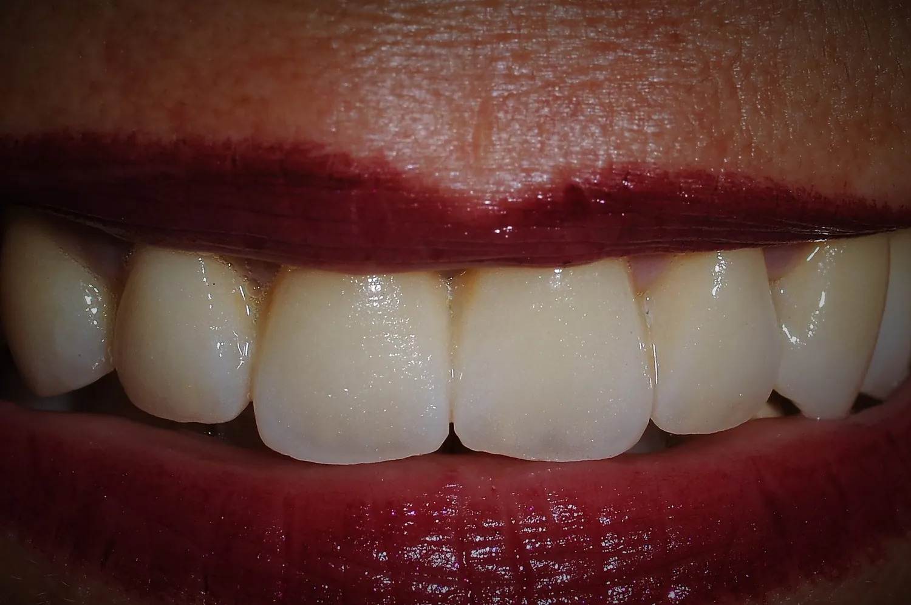
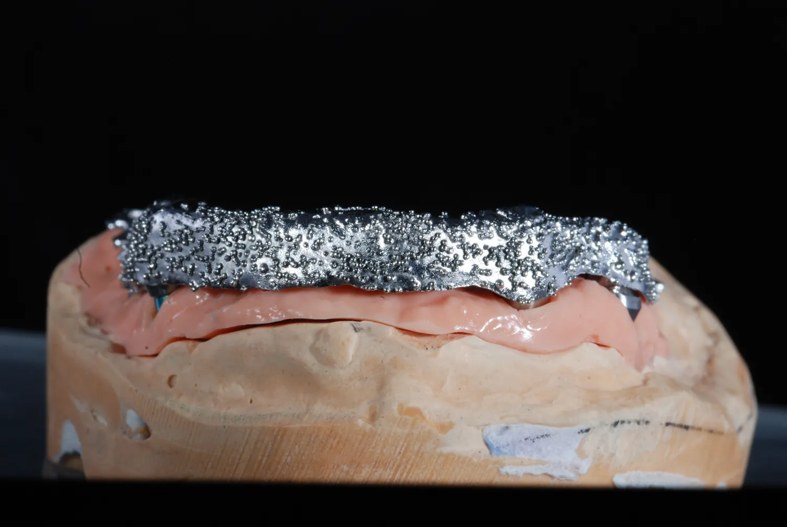
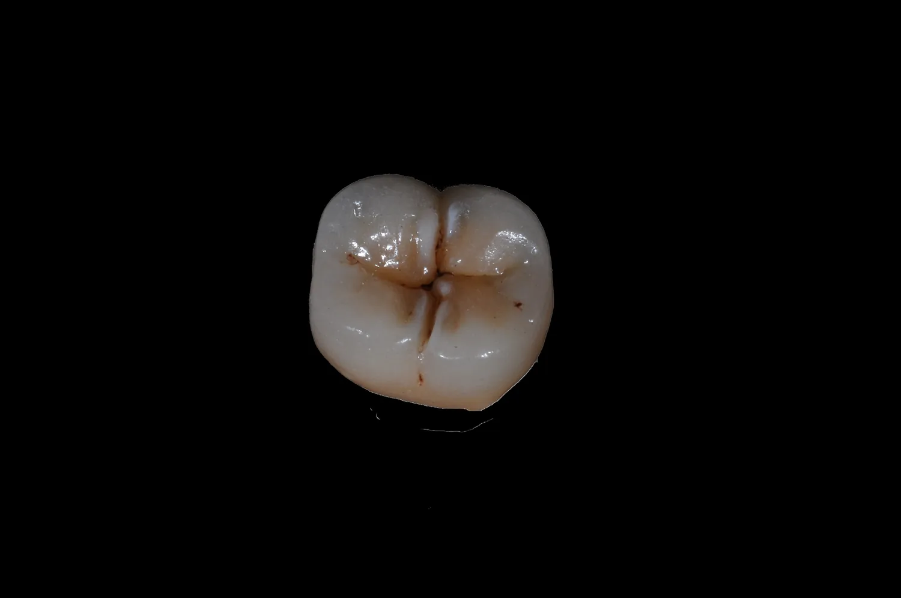
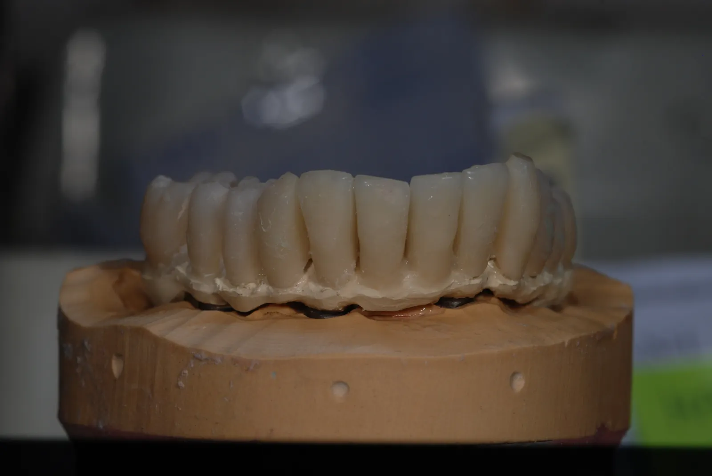
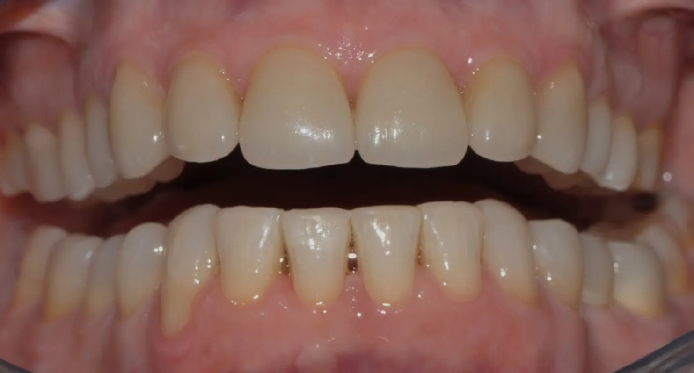
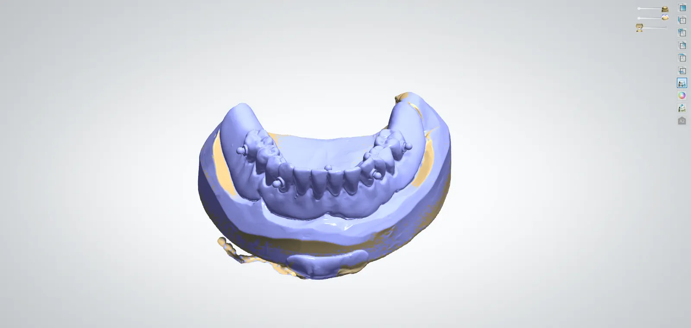
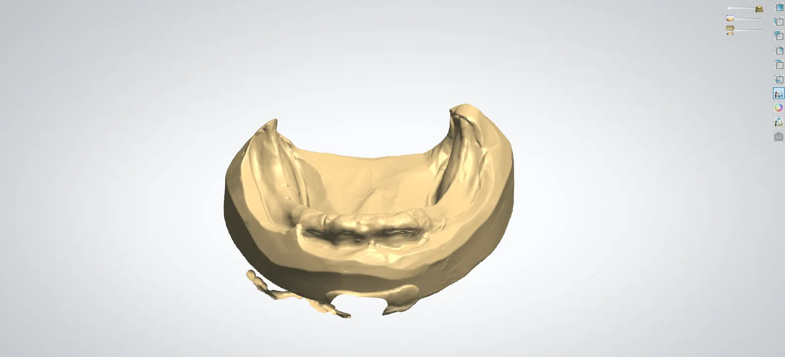
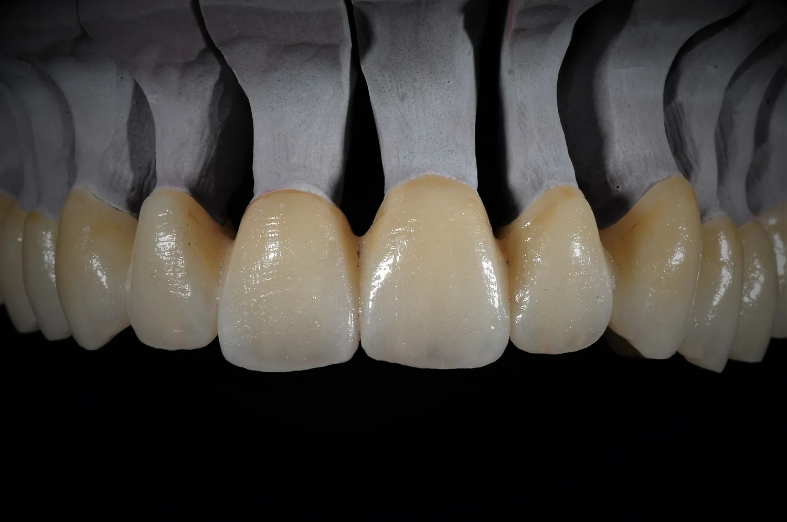

Servizi odontotecnici
Competenze artigianali e tecnologie digitali.
Soluzioni personalizzate per gli studi dentistici, dalla protesi tradizionale alla progettazione digitale.

Protesi fissa
Soluzioni permanenti su misura per ripristinare funzionalità ed estetica.
Pagina dedicata →
Implantologia
Manufatti protesici su impianti studiati per precisione e stabilità.
Pagina dedicata →
Corone
Corone dentali su misura dall’aspetto naturale e resistente.
Pagina dedicata →
Ponti
Soluzioni protesiche per sostituire uno o più denti mancanti.
Pagina dedicata →
Faccette
Faccette ad alta resa estetica per risultati naturali e luminosi.
Pagina dedicata →
Laboratorio CAD/CAM
Progettazione e produzione digitale di manufatti odontotecnici.
Pagina dedicata →
Stampa 3D
Modelli, dime e componenti prodotti con sistemi tridimensionali.
Pagina dedicata →
Ceramica dentale
Restauri estetici, resistenti e altamente naturali.
Pagina dedicata →